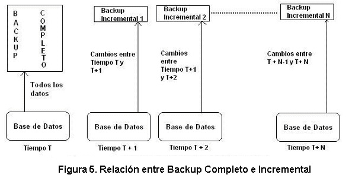
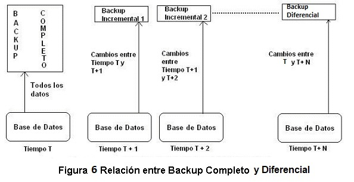

Backups de una Base de Datos
Como ya se expresó anteriormente, una de las funciones del DBA es realizar los backups de la base de datos y mantenerlos al día.
Para poder mantener al día las copias de seguridad de los datos, el DBA cuenta, en general, con 3 tipos de backups:
- Backup Completo
- Backup Incremental
- Backup Diferencial
A continuación, se explica en detalle qué características tiene cada uno de estos backups y cuáles son sus relaciones y diferencias.
Backup Completo
Como su nombre lo indica, el backup completo realiza una copia de TODOS los datos de una base de datos. Es decir, le realiza una copia al EJEMPLAR de la base de datos existente en el momento de hacer la copia (esta última frase ya se debe entender).
Backup Incremental
A diferencia del backup completo, el backup incremental le hace una copia solo a los movimientos hechos sobre la base de datos, desde el momento en que se le realizó el último backup, bien sea completo o diferencial.
Backup Diferencial
A diferencia del backup incremental, el backup diferencial hace copia de los movimientos hechos desde el ultimo backup completo hecho. No se tienen en cuenta los backups incrementales.
Como funcionan, en la vida real, estos tres tipos de backups?
La responsabilidad del DBA ante la pérdida de datos es poder restaurar la base de datos al estado más próximo al que estaba en el momento de la pérdida.
Para poder explicar lo anterior en el marco de los 3 tipos de backups expuestos, se expone un ejemplo concreto, factible de suceder en la cotidianidad de un departamento de sistemas.
Suponga que el miércoles 6 de septiembre de 2006, Juan Peláez que es el DBA de la empresa XYZ, realiza a las 12:00 del mediodía un backup completo de la base de datos. Siendo las 6:00 p.m. del mismo día, sucede un daño y se pierden los datos de la base de datos. Qué puede hacer Juan Peláez? En este caso, él como DBA, debe “montar” el backup completo realizado. Pero y como es posible recuperar las 6 horas de trabajo perdidas, para que lo hecho se refleje en lo recuperado por Juan Peláez? Existe un componente muy importante de toda base de datos que se conoce como el log de transacciones, que es simplemente en archivo físico del sistema operativo en el cual se van grabando todas las acciones que se van realizando sobre la base de datos. Por lo tanto, después de haber montado el backup completo, Juan Peláez debe aplicarle el log de transacciones hechas después de las 12:00 del mediodía. Con esta operación, la base de datos quedará como si nunca se hubieran perdido los datos.
Sigamos con el caso anterior. Después de restaurar la base de datos, Juan Peláez vuelve y realiza un backup completo a las 6:30 p.m. Al finalizar el día siguiente, 6:00 p.m. del 7 de septiembre de 2006, el DBA hace un backup incremental. Y al empezar el día siguiente, 8:00 a.m. del 8 de septiembre de 2006, Juan Peláez se encuentra con que la base de datos ha sufrido un daño por un mal arranque del servidor. Como recupera Juan la base de datos en este caso? Lo que se debe hacer es restaurar el último backup completo realizado, es decir, el del 6 de septiembre de 2006 a las 6:30 p.m. En este caso, la base de datos quedará con un día entero de atraso. Pero como existe un backup incremental hecho el día anterior al finalizar el día, es factible montar sobre el backup completo recién restaurado, el último backup incremental realizado para así dejar la base de datos como estaba en el momento del fallo. (En estos ejemplos estoy suponiendo que Juan Peláez trabaja en una empresa que no labora en las horas de la noche sobre la base de datos).

Fuente Propia.
Por otra parte, la siguiente grafica muestra el comportamiento del backup diferencial, el cual solo tiene en cuenta el ultimo backup completo realizado.
En este caso, la diferencia entre el backup incremental y el backup diferencial es que, si necesitamos restaurar la base de datos a un punto del tiempo, con los backups incrementales debemos restaurar el ultimo backup completo y todos los backups incrementales que se hayan hecho hasta el momento de la restauración. Por otro lado, con el backup diferencial se necesitaría restaurar el ultimo backup completo y el backup diferencial mas reciente al punto de restauración.
Es importante resaltar que el backup incremental consume menos recursos en disco.

Fuente Propia.
De lo anterior podemos deducir que es una política común hacer un backup completo de la base de datos cada semana y backups incrementales y/o diferenciales de la misma todos los días al finalizar la jornada. Esta política, como se ilustra en la figura No. 6, permite que el DBA cumpla con su función plenamente.